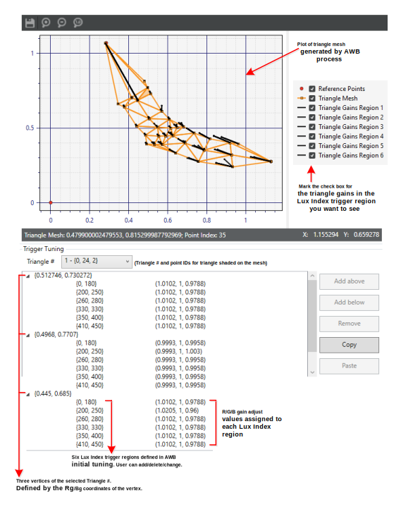

It is important that users be able to adjust the final AWB gain to obtain a user-preferred color tone. AWB processing provides for gain adjust with a triangle mesh-based AWB gain adjust module. This module allows users to have locally optimized control of AWB gain adjust by changing the triangle configuration.
The tuning tool uses a topological configuration for specifying the gain adjust process. This enables more flexibility in making changes to the gain adjust configuration (adding/deleting/modifying gain adjust values) and provides more efficient matching to the reference color.
During AWB initial tuning, a triangle mesh is generated to cover the entire gray zone in the Rg/Bg space. In each point of the mesh, several different gain adjust triples (Rgain, Ggain, Bgain) are specified along with corresponding lux index triggers. The image below of the Chromatix user interface for triangle gain adjust shows a sample configuration of the related parameters.

In the triangle where the final AWB decision (from the DA) is located, the gain adjust values specified for each vertex of the triangle are used by the triangle gain adjust module to interpolate the final gain adjust. To speed up the process of finding the triangle where the DA decision is located, initial tuning configures four starting triangle indexes for daylight, F-light, A-light and H-light. The DA data determines which starting triangle is used. This auxiliary information can be modified as necessary.